7. MSKのチュートリアル実装(CLI編)¶
MSKを利用したメッセージの送受信を行うために、MSKのクラスターを作成する。 その後、クラスターに対してキュートなるトピックを作成する。 最後に、EC2上からCLIを利用して、メッセージの送受信を行う。
7.1. クラスターの作り方¶
基本的にMSKはマネージドなkafkaのクラスターを提供するサービスである。 そのため、kafkaのトピック作成やメッセージの送受信、メッセージの中身の確認といった部分のサポートは提供されていない。
MSKのコンソールからクラスターを作成を選択。カスタムを選択する

クラスター名を設定する。

クラスターのタイプはプロビジョンドを利用

ブローカーのインスタンスのファミリーのタイプを選択を行う。 (図では大きいファミリーだが小さいのでOK) ブローカーがどの程度分散されるかなどを設定できるか、AZに分散をするので、この後に設定するネットワークの設定と関連する。

ネットワークの設定を行う。
事前に設定するVPC、AZ、セキュリティグループを作成しておく。
後ほど、EC2のクライアントと接続できるようにセキュリティグループの設定を行う。

セキュリティの設定を行う。一旦はIAMベースでのセキュリティやメッセージの暗号化について設定しておく

モニタリングの設定をする前にロググループを設定しておく

作成したロググループを使って、ログの出力を行う。ログのレベルはDEFAULTでOK

作成後に変更できる項目などの一覧は以下

7.2. EC2の作成¶
7.2.1. IAM Roleの作成¶
EC2に付与するMSKにアクセスすることができるポリシー及びロールを作成する
ポリシーを作成して、以下のポリシーに対して3点変更する
Account-ID
MSKTutorialCluster
region
{
"Version": "2012-10-17",
"Statement": [
{
"Effect": "Allow",
"Action": [
"kafka-cluster:Connect",
"kafka-cluster:AlterCluster",
"kafka-cluster:DescribeCluster"
],
"Resource": [
"arn:aws:kafka:region:Account-ID:cluster/MSKTutorialCluster/*"
]
},
{
"Effect": "Allow",
"Action": [
"kafka-cluster:*Topic*",
"kafka-cluster:WriteData",
"kafka-cluster:ReadData"
],
"Resource": [
"arn:aws:kafka:region:Account-ID:topic/MSKTutorialCluster/*"
]
},
{
"Effect": "Allow",
"Action": [
"kafka-cluster:AlterGroup",
"kafka-cluster:DescribeGroup"
],
"Resource": [
"arn:aws:kafka:region:Account-ID:group/MSKTutorialCluster/*"
]
}
]
}
7.2.2. EC2インスタンスの作成¶
MSKのクライアントをEC2で作成する。 簡単のためにMSKと同じVPC上にEC2を作成する。
名前とインスタンスの設定はデフォルト

ネットワークの設定はMSKと同じVPC内にEC2を作成する

作成が完了したら、セキュリティグループのルールの変更とIAMロールの付与を行う。
まず、セキュリティグループを修正するためVPCのコンソール画面からセキュリティグループの画面に移動する。
MSK側のSG
インバウンドルールを編集してEC2のSGからのすべてのトラフィックについて許可する。EC2側のSG
SSHの許可をする。ポート22に対してMyIPか3.112.23.0/29(AWSコンソールからの接続用)で許可する。
次に、EC2のコンソールから先ほど作成したIAM Roleの付与をする。
7.3. トピックの作り方¶
EC2からインスタンスを選択して、接続する。
javaのインストール
sudo yum -y install java-11
kafkaのダウンロードと解凍
wget https://archive.apache.org/dist/kafka/2.8.1/kafka_2.12-2.8.1.tgz
tar -xzf kafka_2.12-2.8.1.tgz
kafka_2.12-2.8.1/libsディレクトリに移動し、次のコマンドを実行して Amazon MSK IAM JAR ファイルをダウンロードします。Amazon MSK IAM JAR により、クライアントマシンはクラスターにアクセスできます。
wget https://github.com/aws/aws-msk-iam-auth/releases/download/v1.1.1/aws-msk-iam-auth-1.1.1-all.jar
kafka_2.12-2.8.1/bin ディレクトリに移動します。次のプロパティ設定をコピーして、新しいファイルに貼り付けます。ファイルに client.properties という名前を付け、保存します。
security.protocol=SASL_SSL
sasl.mechanism=AWS_MSK_IAM
sasl.jaas.config=software.amazon.msk.auth.iam.IAMLoginModule required;
sasl.client.callback.handler.class=software.amazon.msk.auth.iam.IAMClientCallbackHandler
これらの設定の詳細を解説しておくと
security.protocol=SASL_SSL
クライアントとKafkaサーバー間の通信プロトコルを設定している（SASLを使用したSSLを指定）sasl.mechanism=AWS_MSK_IAM
SASL認証をどの方法を利用するかで、MSKのIAM認証を利用sasl.jaas.config=software.amazon.msk.auth.iam.IAMLoginModule required;
JAAS(Java Authentication and Authorization Service)の設定で、IAMを利用することを指定sasl.client.callback.handler.class=software.amazon.msk.auth.iam.IAMClientCallbackHandler
Callbackに関する設定
7.3.1. コマンド一覧¶
EC2上から実効するコマンドは以下
Topicの一覧表示
kafka_2.12-2.8.1/bin/kafka-topics.sh --list --zookeeper YOUR_ZOOKEEPER_SERVER
Topicの作成
kafka_2.12-2.8.1/bin/kafka-topics.sh --create --bootstrap-server YOUR_BOOTSTRAP_SERVER --command-config kafka_2.12-2.8.1/bin/client.properties --replication-factor 2 --partitions 1 --topic YOUR_TOPIC
Topicの削除
kafka_2.12-2.8.1/bin/kafka-topics.sh --delete --zookeeper YOUR_ZOOKEEPER_SERVER --topic YOUR_TOPIC
TopicのPartition数など確認
kafka_2.12-2.8.1/bin/kafka-topics.sh --describe --zookeeper YOUR_ZOOKEEPER_SERVER --topic YOUR_TOPIC
kafka_2.12-2.8.1/bin/kafka-topics.sh --describe --bootstrap-server YOUR_BOOTSTRAP_SERVER --command-config kafka_2.12-2.8.1/bin/client.properties --topic YOUR_TOPIC
TopicのLagなど確認
kafka_2.12-2.8.1/bin/kafka-consumer-groups.sh --bootstrap-server YOUR_BOOTSTRAP_SERVER --command-config kafka_2.12-2.8.1/bin/client.properties --group group_id --describe
7.3.2. メッセージの送信¶
<path-to-your-kafka-installation>/bin/kafka-console-producer.sh --broker-list BootstrapServerString --producer.config bin/client.properties --topic MSKTutorialTopic
コンソールが出力されるのでメッセージを記入

7.3.3. メッセージの受信¶
別のEC2を起動し、javaやkafkaのインストールをする。
以下のコマンドを実行すると、producerで送信されたメッセージが受信できる。
<path-to-your-kafka-installation>/bin/kafka-console-consumer.sh --bootstrap-server BootstrapServerString --consumer.config bin/client.properties --topic MSKTutorialTopic --from-beginning

8. MSKの開発環境の構築¶
8.1. ProducerのCICD¶
MSKは依存関係などが重くなることが見込まれるので、ECS上に構築することにする。 SQSのConsumerと同様の手順で構築する
8.2. ConsumerのCICD¶
基本的にはSQSのConsumerと同様
Spring側でapplication.ymlを作成してportを8081に変更する
DockerFileをmskに変えて、Portも8081とする
9. MSKのチュートリアル実装(Java編)¶
9.1. Producerの設定¶
9.1.1. pomの設定¶
以下の依存関係を追加する
kafka:kafka-clients
Apache KafkaのJavaクライアントライブラリで、ProducerとConsumerを設定するためには必要kafka:spring-kafka
SpringBootフレームワークが提供するkafkaとの統合をサポートするライブラリで、送受信を行うawssdk:kafka
AWS SDK for javaの一部で、MSKのクラスタに対するAPIリクエストを行うために利用されるmsk:aws-msk-iam-auth
AWS MSK IAM Java Authenticationというライブラリで、MSKへのIAM認証を実施してくれるaws-sdk-java
springプロジェクトがAWS JAVA SDKを利用してAWSのサービスにアクセスするための依存関係の設定
<dependency>
<groupId>software.amazon.msk</groupId>
<artifactId>aws-msk-iam-auth</artifactId>
<version>1.1.0</version>
</dependency>
<dependency>
<groupId>software.amazon.awssdk</groupId>
<artifactId>kafka</artifactId>
<version>2.20.98</version>
</dependency>
<dependency>
<groupId>org.apache.kafka</groupId>
<artifactId>kafka-clients</artifactId>
</dependency>
<dependency>
<groupId>org.springframework.kafka</groupId>
<artifactId>spring-kafka</artifactId>
</dependency>
<!-- https://mvnrepository.com/artifact/software.amazon.awssdk/aws-sdk-java -->
<dependency>
<groupId>software.amazon.awssdk</groupId>
<artifactId>aws-sdk-java</artifactId>
<version>2.20.98</version>
<scope>provided</scope>
</dependency>
9.1.2. application.yml¶
server
msk-producerは8082のポートを利用
producer
bootstarap-servers: ブートストラップのエンドポイントを指定する（MSKクラスタより取得）
key-serializer: producerがキーを送信する際にバイトに変換するための設定
value-serializer: producerが値を送信する際にバイトに変換するための設定
properties
security.protocol: kafkaへの接続に使用するセキュリティプロトコルの設定
sasl.mechanism: saslのメカニズム設定で、今回はIAMを利用するための設定が行われている
sasl.jaas.config: JAASの設定で、MSKのIAMログインモジュールを利用
sasl.client.callback.handler.class: SASLのコールバックを指定する
server:
port: 8082
spring:
kafka:
producer:
bootstrap-servers: <YOUR_BOOTSTRAP>
key-serializer: org.apache.kafka.common.serialization.StringSerializer
value-serializer: org.apache.kafka.common.serialization.StringSerializer
properties:
security.protocol: SASL_SSL
sasl.mechanism: AWS_MSK_IAM
sasl.jaas.config: software.amazon.msk.auth.iam.IAMLoginModule required;
sasl.client.callback.handler.class: software.amazon.msk.auth.iam.IAMClientCallbackHandler
9.1.3. フロントエンドの作成¶
前提としてalbのパスルーティングを行う際に、msk-producer*というパスをルーティングするので、全てのパスはmsk-producerから始まるようにする。
msk-producerにアクセスすると、index.htmlにリダイレクトしてindex.htmlからmessageをmskにpostするという全体像。
以下2つのフロントエンドの実装を行う。
ヘルスチェック用のフロント
メッセージ送信用のフロント
■ヘルスチェック用
TGで設定するALBからのヘルスチェックのエンドポイントとして利用する。
@RestController
public class HealthCheckController {
@GetMapping("/msk-producer-healthCheck")
public ResponseEntity<String> healthCheck() {
return ResponseEntity.ok("Healthy");
}
}
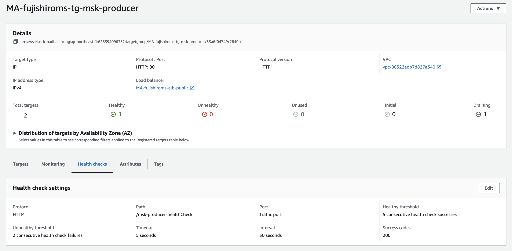
■メッセージ送信用
src/main/java/resourcesの配下にmsk-producer-index.htmlを作成する
partition_numは利用しなかった
number of messageで送信するメッセージ数を指定する
topicで、送信するTopicを指定する
<!DOCTYPE html>
<html lang="ja">
<head>
<title>Send Message</title>
</head>
<body>
<form action="/msk-producer-send" method="post">
<label for="partition_num">partition_num:</label><br>
<input type="number" id="partition_num" name="partition_num"><br>
<label for="num">Number of Messages:</label><br>
<input type="number" id="num" name="num" min="1"><br>
<label for="topic">Topic:</label><br>
<input type="text" id="topic" name="topic"><br>
<input type="submit" value="Submit"></form>
</body>
</html>
msk-producerへのアクセスをindex.htmlにリダイレクトするためにWebConfig.javaを実装する
import org.springframework.context.annotation.Configuration;
import org.springframework.web.servlet.config.annotation.ViewControllerRegistry;
import org.springframework.web.servlet.config.annotation.WebMvcConfigurer;
@Configuration
public class WebConfig implements WebMvcConfigurer {
@Override
public void addViewControllers(ViewControllerRegistry registry) {
registry.addRedirectViewController("/msk-producer", "/msk-producer-index.html");
}
}
9.1.4. Controller¶
フロントエンドで受け取ったメッセージをmsk-producer-sendにpostするためのControllerクラスを作成する。
■Health Check用
アクセスが来たらhealthyを返すだけ
import org.springframework.http.ResponseEntity;
import org.springframework.web.bind.annotation.GetMapping;
import org.springframework.web.bind.annotation.RestController;
@RestController
public class HealthCheckController {
@GetMapping("/msk-producer-healthCheck")
public ResponseEntity<String> healthCheck() {
return ResponseEntity.ok("Healthy");
}
}
■メッセージ送信用
別で実装するMessageSenderを利用して、メッセージ送信するFrontend Controller
import org.springframework.beans.factory.annotation.Autowired;
import org.springframework.http.ResponseEntity;
import org.springframework.web.bind.annotation.PostMapping;
import org.springframework.web.bind.annotation.RequestParam;
import org.springframework.web.bind.annotation.RestController;
@RestController
public class FrontendController {
private final MessageSender messageSender;
@Autowired
public FrontendController(MessageSender messageSender) {
this.messageSender = messageSender;
}
@PostMapping("/msk-producer-send")
public ResponseEntity<String> sendMessage(@RequestParam("num") int num, @RequestParam("topic") String topic, @RequestParam("partition_num") int partition_num) {
if (num <= 0 || partition_num <= 0) {
return ResponseEntity.badRequest().body("Invalid number of messages or partition number. Only positive integers are allowed.");
}
messageSender.sendRandomMessagesToTopic(topic, num, partition_num);
return ResponseEntity.ok("Messages sent: " + num);
}
}
9.1.5. MessageSender¶
メッセージを送るMessageSenderを作成する
spring-kafkaで提供されているKafkaTemplateを利用して、インスタンスを作成
インスタンスに必要情報を詰めて、送信している
import org.springframework.beans.factory.annotation.Autowired;
import org.springframework.kafka.core.KafkaTemplate;
import org.springframework.stereotype.Component;
import java.util.Random;
import java.util.UUID;
@Component
public class MessageSender {
private final KafkaTemplate<String, String> kafkaTemplate;
private final String topic;
@Autowired
public MessageSender(KafkaTemplate<String, String> kafkaTemplate) {
this.kafkaTemplate = kafkaTemplate;
}
public void sendMessage(String message) {
String randomKey = UUID.randomUUID().toString();
kafkaTemplate.send(topic, randomKey, message);
}
public void sendRandomMessagesToTopic(String topic, int num, int partition_num) {
Random rand = new Random();
System.out.print(num);
for (int i = 0; i < num; i++) {
int randomNum = rand.nextInt(11);
System.out.print(randomNum);
String randomKey = UUID.randomUUID().toString();
kafkaTemplate.send(topic, randomKey, String.valueOf(randomNum));
}
}
}
9.2. Consumerの設定¶
9.2.1. application.yaml¶
msk-consumerは8081のポートを利用
consumer
group-id
これはConsumer側で自身が所属するグループを指定するための値。
この値を利用することで、Pub-Subモデルのメッセージキューにすることができる。異なるグループのConsumerはそれぞれ独立して、メッセージをConsumeする。
同じグループのConsumerは、お互いにoffset情報をやり取りして、メッセージが適切に分配されることを保証する
auto-offset-reset
Consumerが消費者が読み込むべき最初のオフセットをどのように決定するかを指定する。earliest: 最も古いオフセットから読み込むので、全メッセージを消費することになる
latest: 最新のオフセットから読み込む、Consumerが起動した時点からTopicに追加されたメッセージを消費する
none: Consumerが前回消費した最後のオフセットの次から読み込むが、そのオフセットが存在しない場合、例外がスローされる
enable-auto-commit
コミットをkafka側が一定間隔で自動的に実施するか、ソースコード側で明示的に実施するか
今回は、手動コミットを行うのでfalseを背彫っていmax-poll-records
一度のpollで取得するメッセージ数
オートスケーリングすることを考えると、1にしておくほうが良い
オートスケーリングしてリバランスしたにも関わらず、メッセージを抱えているconsumerがいると処理が終わらなくなった
server:
port: 8081
spring:
kafka:
listener:
ack-mode: manual
consumer:
bootstrap-servers: b-2.mafujishiromsmsk.2mkkld.c2.kafka.ap-northeast-1.amazonaws.com:9098
key-deserializer: org.apache.kafka.common.serialization.StringDeserializer
value-deserializer: org.apache.kafka.common.serialization.StringDeserializer
group-id: CG-XXXXX
auto-offset-reset: latest
enable-auto-commit: false # コミットの自動実行を有効にする
max-poll-records: 1 # 一度のpollで取得するレコードの最大数を1に設定
# auto-commit-interval: 5000 # コミットの間隔（ミリ秒）
properties:
security.protocol: SASL_SSL
sasl.mechanism: AWS_MSK_IAM
sasl.jaas.config: software.amazon.msk.auth.iam.IAMLoginModule required;
sasl.client.callback.handler.class: software.amazon.msk.auth.iam.IAMClientCallbackHandler```
9.2.2. MessageReceiver¶
以下のMessageReciverクラスを作成する
@Component
Springのコンポーネントスキャンにより、自動的にコンポーネントとして検出され、springによりインスタンスが生成される@KafkaLister
このメソッドはTopicからのメッセージ受信するためのリスナーメソッドになる
トピックを指定するacknowledgment.acknowledge(); // コミットを実行
このコマンドでkafkaに対して手動でコミットする
import org.apache.kafka.clients.consumer.ConsumerRecord;
import org.springframework.kafka.annotation.KafkaListener;
import org.springframework.kafka.support.Acknowledgment;
import org.springframework.stereotype.Component;
import java.time.LocalDateTime;
import java.time.format.DateTimeFormatter;
@Component
public class MessageReceiver {
@KafkaListener(topics="Topic_consume_week")
public void receiveMessage(ConsumerRecord<String, String> record, Acknowledgment acknowledgment){
DateTimeFormatter formatter = DateTimeFormatter.ofPattern("yyyy-MM-dd HH:mm:ss");
System.out.println("PROCESSING START =======================================================" );
//処理開始時間の表示
LocalDateTime now_bf = LocalDateTime.now();
System.out.println("START TIME：" + formatter.format(now_bf)+" & MESSAGE key： "+record.key());
System.out.println("START TIME：" + formatter.format(now_bf)+" & MESSAGE Value： "+record.value());
System.out.println("START TIME：" + formatter.format(now_bf)+" & MESSAGE partition： "+record.partition());
System.out.println("START TIME：" + formatter.format(now_bf)+" & MESSAGE Offset： "+record.offset());
int waitTime = Integer.parseInt(record.value()) * 1000;
System.out.println("wait time: " + waitTime);
waitInMilliseconds(waitTime);
try {
acknowledgment.acknowledge(); // コミットを実行
System.out.println("Commit Success");
} catch (Exception e) {
// エラーが発生したらここでスロー
throw new RuntimeException("Unexpected error while committing record: " + record, e);
}
//処理完了時間の表示
LocalDateTime now_af = LocalDateTime.now();
System.out.println("END TIME： " + formatter.format(now_af) +" & MESSAGE ID： "+record.key());
System.out.println("PROCESSING END =======================================================" );
System.out.println("ALL_INFO======= & MESSAGE Offset： "+record.offset()+ " & MESSAGE partition： "+record.partition()+ " & START_TIME:" + formatter.format(now_bf)+" & MESSAGE Value： "+record.value()+" & END TIME： " + formatter.format(now_af) +" & =======ALL_INFO");
}
//数字を受け取って、その時間待機するためのメソッド
private void waitInMilliseconds(int milliseconds) {
try {
Thread.sleep(milliseconds);
} catch (InterruptedException e) {
Thread.currentThread().interrupt();
e.printStackTrace();
}
}
}
9.2.3. 結果¶
ALB_URL/msk-producerにアクセスすると以下画面が表示される。
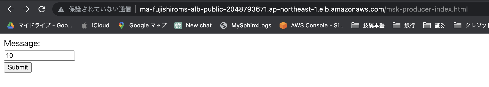
画面から数字を入力すると、Consumer側でその数だけメッセージを受け取ってシリアルに待機することを確認
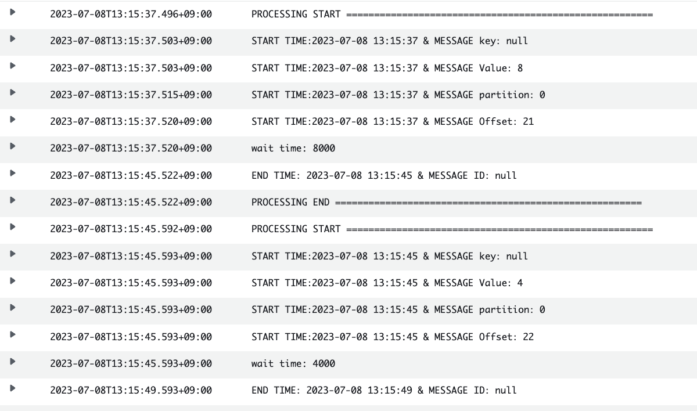
10. MSKのオートスケーリング設定¶
10.1. 基本方針¶
監視 CloudWatchで
SumoffsetLagを監視する。 (処理済みと未処理のoffsetの差分)オートスケール
キューが溜まったら、スケールアウトして8台になる
5分間連続でメッセージ数が0になったらスケールインする
確認事項
件数と処理数が多い場合に、働かないConsumerが発生して、減り方が漸減する
最初はpartitionに偏りがない
後半にpartitionに偏りが発生する
partition数を増やすことで、偏りが減るかを確認する
10.2. 監視設定¶
メトリクスの各種設定はSQSと同様
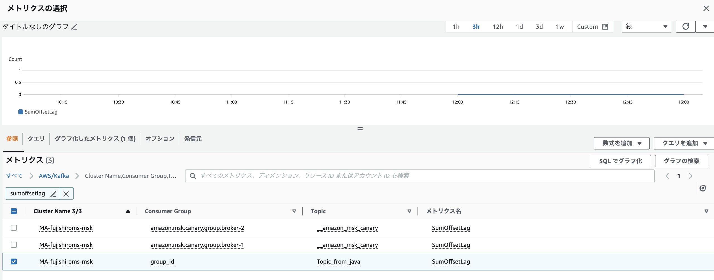
スケールアウトの設定
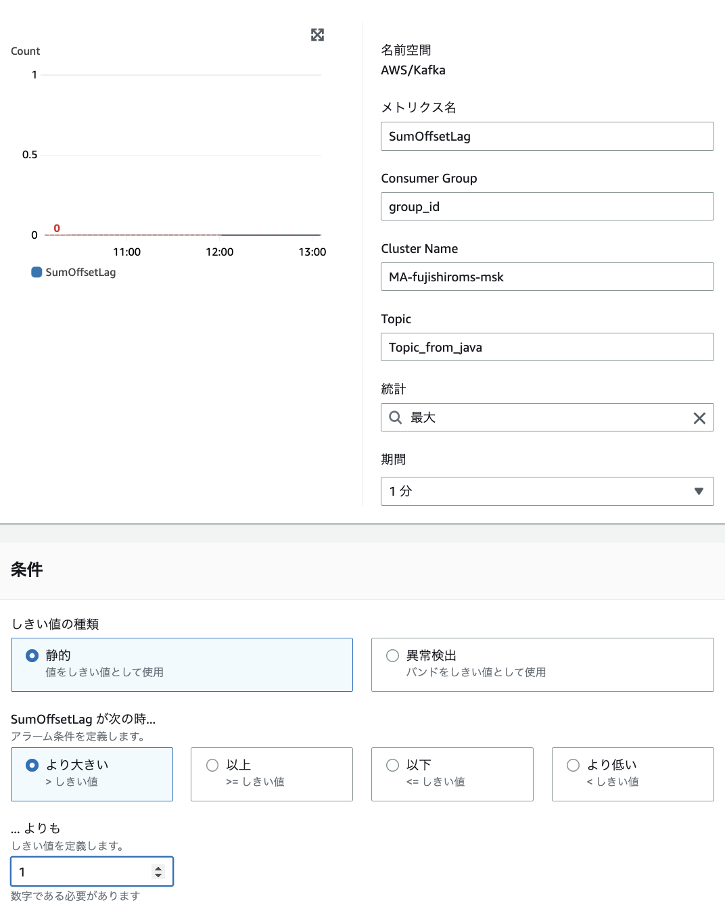
スケールインの設定
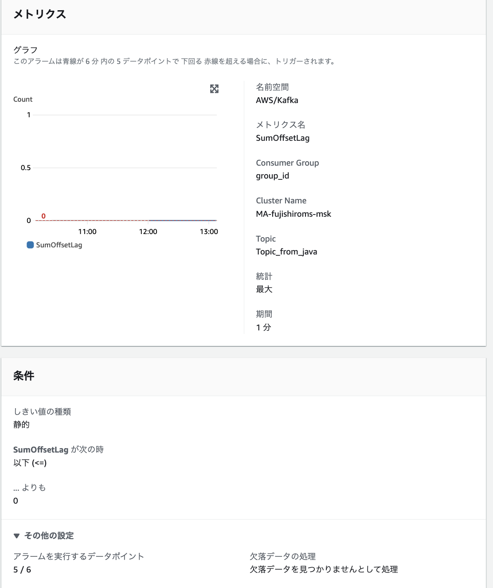
10.3. オートスケール設定¶
基本的にはSQSの設定と同様にする。
スケールアウトの設定
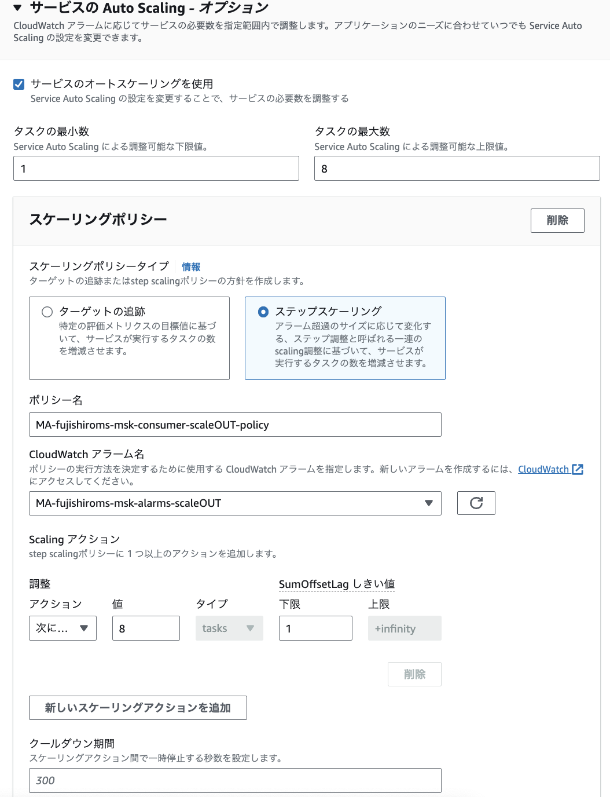
スケールインの設定
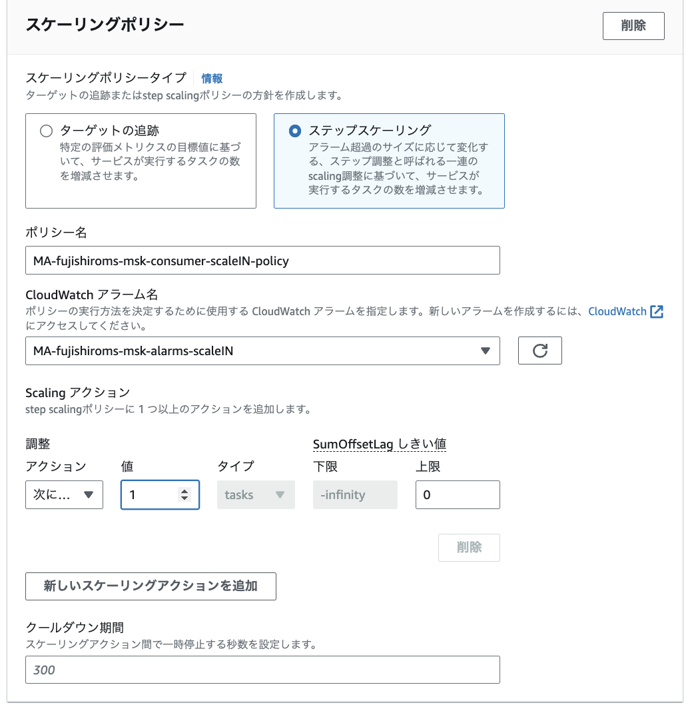
10.4. 検証計画¶
いくつかの観点で検証を行う
partition数の比較
latestとearliestの比較
offsets.retention.minutesの検証(60min)
offsets.retention.minutesの検証(7days)
10.4.1. partition数の比較¶
メッセージを送信したときに、格納されるpartitionに偏りが出てしまう問題に対して、parititionを増やすことで対応できるかを調査。
結果として、2倍にすると50%程度、分散が減るという効果があったが、それ以上はpartitionを増やしても効果がなかった
また、それとは別にして、メッセージ自体の処理の差分で処理が詰まってしまう問題は解決しなかった
partition5の際は標準偏差:27
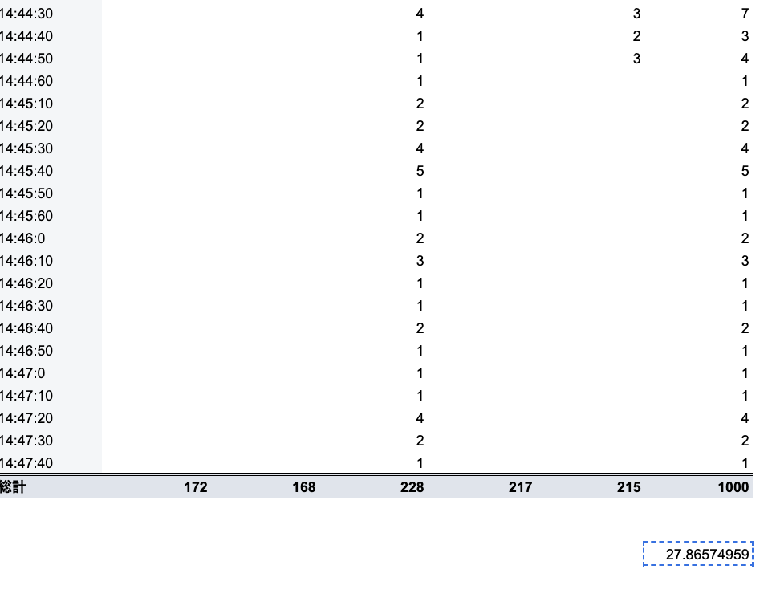
partition10の際は標準偏差:13
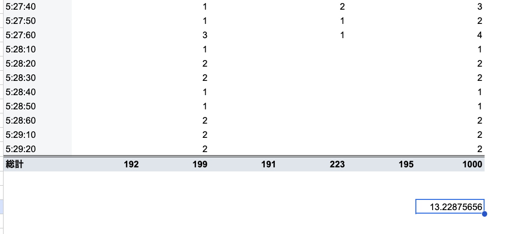
partition100の際は標準偏差:15
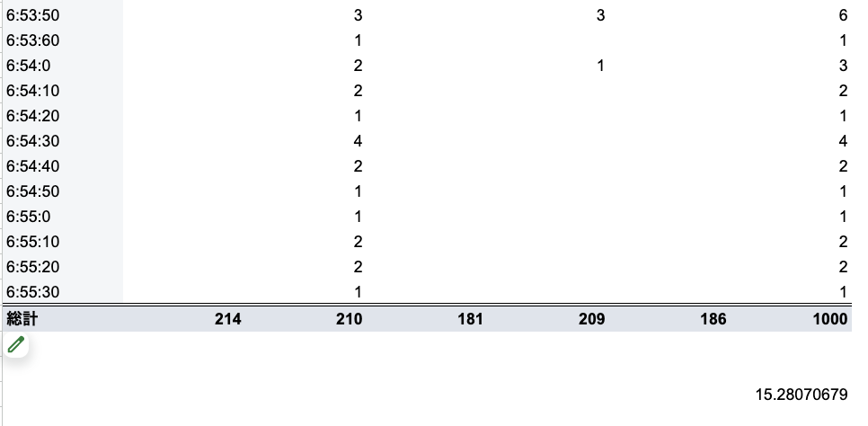
10.4.2. latestとearliestの比較¶
auto.offsets.resetの挙動を確認するために、topicを作成して、consumerを起動させる前に、メッセージを投入。
earliestの場合、全てのメッセージが処理されるはず
latestの場合、メッセージ処理はされず、その後に格納されたメッセージは処理されるはず
結果として予想通りの挙動をした
10.4.2.1. earliest¶
TopicName:Topic_P5_timing_check_earliest
consumerのreset=earliestにしておく
Topicを作成
Topicにメッセージを投入
consumerが立ち上がったのことないので、CloudWatch アラームも無反応
オートスケーリングで5台立ち上がらない
手動で１台立ち上げる
起動後に5件追加で投げる
結果として、105件処理した
10.4.2.2. latest¶
TopicName:Topic_P5_timing_check_latest
consumerのreset=latestにしておく
Topicを作成
Topicにメッセージを100件投入
オートスケーリングで5台立ち上がらない
手動で１台立ち上げる
起動後に5件追加で投げる
結果として、5件だけ処理した
10.4.3. offsets.retention.minutesの検証(60min)¶
MSKのクラスター構成で以下を設定
offsets.retention.minutes=60
対象のクラスタ-にこの構成を設定
これにより、60分consumerGroupが0の場合、__consumer_offsetsが破棄される。
以下を検証
consumerの起動のみによる更新
consumerのメッセージ処理による更新
定期的な起動設定による長期更新
10.4.3.1. ログの解説¶
consumerを追加したり、再起動したり、長期間起動がなくoffsetが破棄された際のログは以下
consumer起動時consumerのログ
TopicをSubscribeし始めたログと、その際に、offsetsをどこに設定したログが出力される
2023-08-01 14:17:39.442 INFO 7 --- [ main] o.a.k.clients.consumer.KafkaConsumer : [Consumer clientId=consumer-CG-Topic_wakeup_once-1, groupId=CG-Topic_wakeup_once] Subscribed to topic(s): Topic_wakeup_once
2023-08-01 14:17:45.289 INFO 7 --- [ntainer#0-0-C-1] o.a.k.c.c.internals.SubscriptionState : [Consumer clientId=consumer-CG-Topic_wakeup_once-1, groupId=CG-Topic_wakeup_once] Resetting offset for partition Topic_wakeup_once-1 to position FetchPosition{offset=0, offsetEpoch=Optional.empty, currentLeader=LeaderAndEpoch{leader=Optional[b-2.mafujishiromsmsk.2mkkld.c2.kafka.ap-northeast-1.amazonaws.com:9098 (id: 2 rack: apne1-az4)], epoch=0}}.,2023-08-01 05:17:45.289
2023-08-01 14:17:45.290 INFO 7 --- [ntainer#0-0-C-1] o.a.k.c.c.internals.SubscriptionState : [Consumer clientId=consumer-CG-Topic_wakeup_once-1, groupId=CG-Topic_wakeup_once] Resetting offset for partition Topic_wakeup_once-3 to position FetchPosition{offset=0, offsetEpoch=Optional.empty, currentLeader=LeaderAndEpoch{leader=Optional[b-2.mafujishiromsmsk.2mkkld.c2.kafka.ap-northeast-1.amazonaws.com:9098 (id: 2 rack: apne1-az4)], epoch=0}}.,2023-08-01 05:17:45.290
2023-08-01 14:17:45.677 INFO 7 --- [ntainer#0-0-C-1] o.a.k.c.c.internals.SubscriptionState : [Consumer clientId=consumer-CG-Topic_wakeup_once-1, groupId=CG-Topic_wakeup_once] Resetting offset for partition Topic_wakeup_once-2 to position FetchPosition{offset=0, offsetEpoch=Optional.empty, currentLeader=LeaderAndEpoch{leader=Optional[b-1.mafujishiromsmsk.2mkkld.c2.kafka.ap-northeast-1.amazonaws.com:9098 (id: 1 rack: apne1-az1)], epoch=0}}.,2023-08-01 05:17:45.678
2023-08-01 14:17:45.678 INFO 7 --- [ntainer#0-0-C-1] o.a.k.c.c.internals.SubscriptionState : [Consumer clientId=consumer-CG-Topic_wakeup_once-1, groupId=CG-Topic_wakeup_once] Resetting offset for partition Topic_wakeup_once-0 to position FetchPosition{offset=0, offsetEpoch=Optional.empty, currentLeader=LeaderAndEpoch{leader=Optional[b-1.mafujishiromsmsk.2mkkld.c2.kafka.ap-northeast-1.amazonaws.com:9098 (id: 1 rack: apne1-az1)], epoch=0}}.,2023-08-01 05:17:45.678
2023-08-01 14:17:45.678 INFO 7 --- [ntainer#0-0-C-1] o.a.k.c.c.internals.SubscriptionState : [Consumer clientId=consumer-CG-Topic_wakeup_once-1, groupId=CG-Topic_wakeup_once] Resetting offset for partition Topic_wakeup_once-4 to position FetchPosition{offset=0, offsetEpoch=Optional.empty, currentLeader=LeaderAndEpoch{leader=Optional[b-1.mafujishiromsmsk.2mkkld.c2.kafka.ap-northeast-1.amazonaws.com:9098 (id: 1 rack: apne1-az1)], epoch=0}}.,2023-08-01 05:17:45.678
consumer起動時kafka側のログ
consumerが起動してConsumerGruoupのメンバーが追加されたことを確認できる
[2023-08-01 05:17:42,047] INFO [GroupCoordinator 2]: Preparing to rebalance group CG-Topic_wakeup_once in state PreparingRebalance with old generation 0 (__consumer_offsets-36) (reason: Adding new member consumer-CG-Topic_wakeup_once-1-f5abca3b-115d-48b2-b7f4-cbe3a9f14403 with group instance id None) (kafka.coordinator.group.GroupCoordinator),2023-08-01 05:17:42.000
[2023-08-01 05:17:45,047] INFO [GroupCoordinator 2]: Stabilized group CG-Topic_wakeup_once generation 1 (__consumer_offsets-36) with 1 members (kafka.coordinator.group.GroupCoordinator),2023-08-01 05:17:46.000
[2023-08-01 05:17:45,063] INFO [GroupCoordinator 2]: Assignment received from leader for group CG-Topic_wakeup_once for generation 1. The group has 1 members, 0 of which are static. (kafka.coordinator.group.GroupCoordinator),2023-08-01 05:17:46.000
consumer停止時consumerのログ
ConsumerGroupからdisconnectしたログ
2023-08-01 14:26:42.036 INFO 7 --- [ntainer#0-0-C-1] org.apache.kafka.clients.NetworkClient : [Consumer clientId=consumer-CG-Topic_wakeup_once-1, groupId=CG-Topic_wakeup_once] Node -1 disconnected.,2023-08-01 05:26:42.036
consumer停止時kafkaのログ
ConsumerGroupがemptyになったというログが出力される
[2023-08-01 05:27:45,090] INFO [GroupCoordinator 2]: Member consumer-CG-Topic_wakeup_once-1-f5abca3b-115d-48b2-b7f4-cbe3a9f14403 in group CG-Topic_wakeup_once has failed, removing it from the group (kafka.coordinator.group.GroupCoordinator),2023-08-01 05:27:46.000
[2023-08-01 05:27:45,090] INFO [GroupCoordinator 2]: Preparing to rebalance group CG-Topic_wakeup_once in state PreparingRebalance with old generation 1 (__consumer_offsets-36) (reason: removing member consumer-CG-Topic_wakeup_once-1-f5abca3b-115d-48b2-b7f4-cbe3a9f14403 on heartbeat expiration) (kafka.coordinator.group.GroupCoordinator),2023-08-01 05:27:46.000
[2023-08-01 05:27:45,090] INFO [GroupCoordinator 2]: Group CG-Topic_wakeup_once with generation 2 is now empty (__consumer_offsets-36) (kafka.coordinator.group.GroupCoordinator),2023-08-01 05:27:46.000
consumer再起動時のconsumerのログ
Subscribedのログは再度出る
offsetの情報が残っている場合はResettingではなくてSettingでログが出力される
2023-08-01 15:00:20.359 INFO 6 --- [ main] o.a.k.clients.consumer.KafkaConsumer : [Consumer clientId=consumer-CG-Topic_wakeup_once-1, groupId=CG-Topic_wakeup_once] Subscribed to topic(s): Topic_wakeup_once
2023-08-01 15:00:23.303 INFO 6 --- [ntainer#0-0-C-1] o.a.k.c.c.internals.ConsumerCoordinator : [Consumer clientId=consumer-CG-Topic_wakeup_once-1, groupId=CG-Topic_wakeup_once] Request joining group due to: need to re-join with the given member-id,2023-08-01 06:00:23.303
2023-08-01 15:00:23.303 INFO 6 --- [ntainer#0-0-C-1] o.a.k.c.c.internals.ConsumerCoordinator : [Consumer clientId=consumer-CG-Topic_wakeup_once-1, groupId=CG-Topic_wakeup_once] (Re-)joining group,2023-08-01 06:00:23.303
2023-08-01 15:00:26.306 INFO 6 --- [ntainer#0-0-C-1] o.a.k.c.c.internals.ConsumerCoordinator : [Consumer clientId=consumer-CG-Topic_wakeup_once-1, groupId=CG-Topic_wakeup_once] Successfully joined group with generation Generation{generationId=3, memberId='consumer-CG-Topic_wakeup_once-1-b0717656-578f-4e85-b1de-22994cb0643a', protocol='range'},2023-08-01 06:00:26.306
2023-08-01 15:00:26.308 INFO 6 --- [ntainer#0-0-C-1] o.a.k.c.c.internals.ConsumerCoordinator : [Consumer clientId=consumer-CG-Topic_wakeup_once-1, groupId=CG-Topic_wakeup_once] Finished assignment for group at generation 3: {consumer-CG-Topic_wakeup_once-1-b0717656-578f-4e85-b1de-22994cb0643a=Assignment(partitions=[Topic_wakeup_once-0, Topic_wakeup_once-1, Topic_wakeup_once-2, Topic_wakeup_once-3, Topic_wakeup_once-4])},2023-08-01 06:00:26.309
2023-08-01 15:00:26.323 INFO 6 --- [ntainer#0-0-C-1] o.a.k.c.c.internals.ConsumerCoordinator : [Consumer clientId=consumer-CG-Topic_wakeup_once-1, groupId=CG-Topic_wakeup_once] Successfully synced group in generation Generation{generationId=3, memberId='consumer-CG-Topic_wakeup_once-1-b0717656-578f-4e85-b1de-22994cb0643a', protocol='range'},2023-08-01 06:00:26.324
2023-08-01 15:00:26.324 INFO 6 --- [ntainer#0-0-C-1] o.a.k.c.c.internals.ConsumerCoordinator : [Consumer clientId=consumer-CG-Topic_wakeup_once-1, groupId=CG-Topic_wakeup_once] Notifying assignor about the new Assignment(partitions=[Topic_wakeup_once-0, Topic_wakeup_once-1, Topic_wakeup_once-2, Topic_wakeup_once-3, Topic_wakeup_once-4]),2023-08-01 06:00:26.324
2023-08-01 15:00:26.327 INFO 6 --- [ntainer#0-0-C-1] o.a.k.c.c.internals.ConsumerCoordinator : [Consumer clientId=consumer-CG-Topic_wakeup_once-1, groupId=CG-Topic_wakeup_once] Adding newly assigned partitions: Topic_wakeup_once-2, Topic_wakeup_once-1, Topic_wakeup_once-0, Topic_wakeup_once-4, Topic_wakeup_once-3,2023-08-01 06:00:26.327
2023-08-01 15:00:26.345 INFO 6 --- [ntainer#0-0-C-1] o.a.k.c.c.internals.ConsumerCoordinator : [Consumer clientId=consumer-CG-Topic_wakeup_once-1, groupId=CG-Topic_wakeup_once] Setting offset for partition Topic_wakeup_once-4 to the committed offset FetchPosition{offset=0, offsetEpoch=Optional.empty, currentLeader=LeaderAndEpoch{leader=Optional[b-1.mafujishiromsmsk.2mkkld.c2.kafka.ap-northeast-1.amazonaws.com:9098 (id: 1 rack: apne1-az1)], epoch=0}},2023-08-01 06:00:26.346
2023-08-01 15:00:26.346 INFO 6 --- [ntainer#0-0-C-1] o.a.k.c.c.internals.ConsumerCoordinator : [Consumer clientId=consumer-CG-Topic_wakeup_once-1, groupId=CG-Topic_wakeup_once] Setting offset for partition Topic_wakeup_once-3 to the committed offset FetchPosition{offset=0, offsetEpoch=Optional.empty, currentLeader=LeaderAndEpoch{leader=Optional[b-2.mafujishiromsmsk.2mkkld.c2.kafka.ap-northeast-1.amazonaws.com:9098 (id: 2 rack: apne1-az4)], epoch=0}},2023-08-01 06:00:26.346
2023-08-01 15:00:26.346 INFO 6 --- [ntainer#0-0-C-1] o.a.k.c.c.internals.ConsumerCoordinator : [Consumer clientId=consumer-CG-Topic_wakeup_once-1, groupId=CG-Topic_wakeup_once] Setting offset for partition Topic_wakeup_once-2 to the committed offset FetchPosition{offset=0, offsetEpoch=Optional.empty, currentLeader=LeaderAndEpoch{leader=Optional[b-1.mafujishiromsmsk.2mkkld.c2.kafka.ap-northeast-1.amazonaws.com:9098 (id: 1 rack: apne1-az1)], epoch=0}},2023-08-01 06:00:26.346
2023-08-01 15:00:26.346 INFO 6 --- [ntainer#0-0-C-1] o.a.k.c.c.internals.ConsumerCoordinator : [Consumer clientId=consumer-CG-Topic_wakeup_once-1, groupId=CG-Topic_wakeup_once] Setting offset for partition Topic_wakeup_once-1 to the committed offset FetchPosition{offset=0, offsetEpoch=Optional.empty, currentLeader=LeaderAndEpoch{leader=Optional[b-2.mafujishiromsmsk.2mkkld.c2.kafka.ap-northeast-1.amazonaws.com:9098 (id: 2 rack: apne1-az4)], epoch=0}},2023-08-01 06:00:26.346
2023-08-01 15:00:26.346 INFO 6 --- [ntainer#0-0-C-1] o.a.k.c.c.internals.ConsumerCoordinator : [Consumer clientId=consumer-CG-Topic_wakeup_once-1, groupId=CG-Topic_wakeup_once] Setting offset for partition Topic_wakeup_once-0 to the committed offset FetchPosition{offset=0, offsetEpoch=Optional.empty, currentLeader=LeaderAndEpoch{leader=Optional[b-1.mafujishiromsmsk.2mkkld.c2.kafka.ap-northeast-1.amazonaws.com:9098 (id: 1 rack: apne1-az1)], epoch=0}},2023-08-01 06:00:26.346
2023-08-01 15:00:26.347 INFO 6 --- [ntainer#0-0-C-1] o.s.k.l.KafkaMessageListenerContainer : CG-Topic_wakeup_once: partitions assigned: [Topic_wakeup_once-2, Topic_wakeup_once-1, Topic_wakeup_once-0, Topic_wakeup_once-4, Topic_wakeup_once-3],2023-08-01 06:00:26.347
offsets.retention.minutesを超えた際のkafka側のログ expired offsetsというログが出る
[2023-08-01 07:15:50,724] INFO [GroupMetadataManager brokerId=2] Group CG-Topic_wakeup_once transitioned to Dead in generation 4 (kafka.coordinator.group.GroupMetadataManager),2023-08-01 07:15:52.000
[2023-08-01 07:15:50,725] INFO [GroupMetadataManager brokerId=2] Removed 5 expired offsets in 2 milliseconds. (kafka.coordinator.group.GroupMetadataManager),2023-08-01 07:15:52.000
この後、再度メッセージを投入すると、NotFountが出力して、Resettingのログが出力される
earliestの場合：offset0が設定される
latestの場合：それまでに格納されているoffsetが設定される
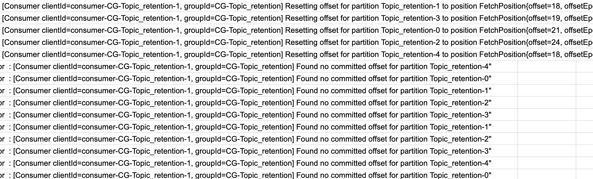
10.4.3.2. consumerのメッセージ処理による更新¶
consumeすることで、retentionされないようになるか確認。以下の①と②どちらの60分後にExpiredするかを確認したところ②の60min後にexpiredした
Topicの作成：Topic_consume_once
Consumer起動
Consumer停止・・・①
30分待機
メッセージ送信
Consumer起動してconsume
Consumer停止・・・②
60分待機
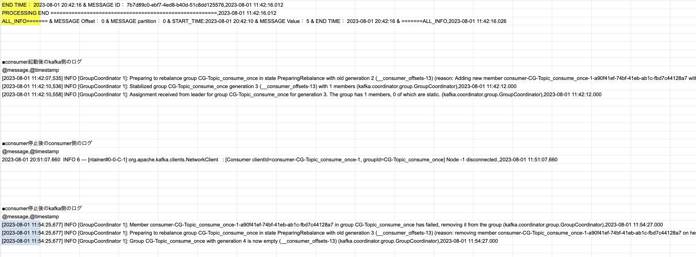
10.4.3.3. consumerの起動のみによる更新¶
consumerを起動させるだけで、retentionされないようになるか確認。以下の①と②どちらの60分後にExpiredするかを確認したところ②の60min後にexpiredした
Topicの作成：Topic_wakeup_once
Consumer起動
Consumer停止・・・①
30分待機
Consumer起動
Consumer停止・・・②
60分待機
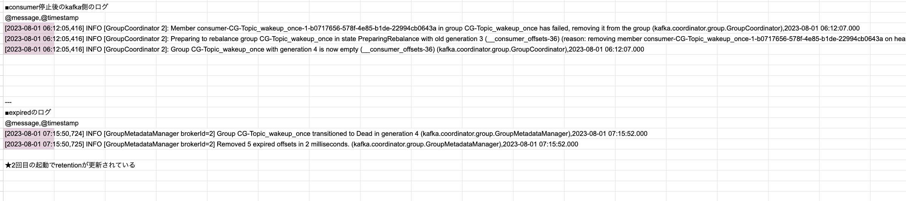
10.4.3.4. 定期的な起動設定による長期更新¶
consumerを起動させるだけで、retentionされないようになるかを長期スパンで確認。
作成時に1件処理
60minに一度起動し、10分後に停止するようにeventbridgeを設定
3日間放置
3日後でもメトリクスは取得され続けた
100件投入してもオートスケーリングして処理された
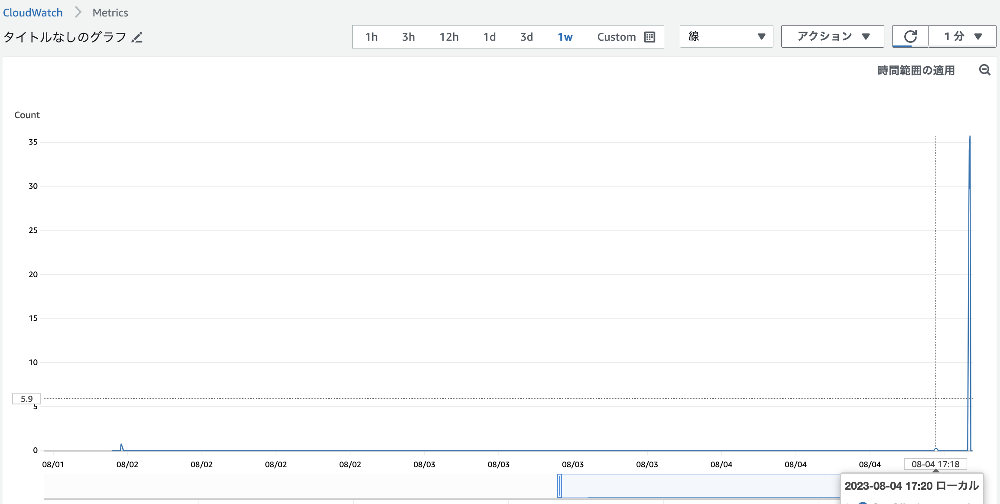
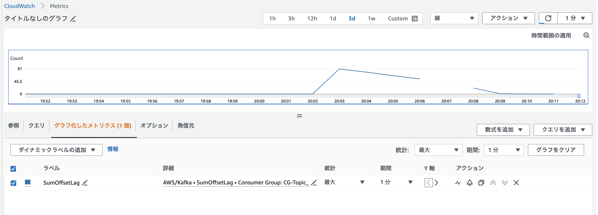
10.4.4. offsets.retention.minutesの検証(7days)¶
MSKのクラスター構成で以下を設定（デフォルト）
offsets.retention.minutes=10080
対象のクラスタ-にこの構成を設定
以下を検証
定期的な起動設定による長期更新(1日1回10min)
10.4.4.1. 定期的な起動設定による長期更新¶
consumerを起動させるだけで、retentionされないようになるかを長期スパンで確認。
作成時のみで処理はさせない
1日に1回起動し、10分後に停止するようにeventbridgeを設定
10日間放置
10日後でもメトリクスは取得され続けた
100件投入してもオートスケーリングして処理された
10.5. トラブルシューティング¶
10.5.1. オートスケールすると、処理がループする¶
コミットがされないので、処理がループしてしまっている。 同じ処理が終わったのに、別のConsumerでまた処理されている。
以下のように、partition一つに対して二つのconsumerが紐づいていたりする。
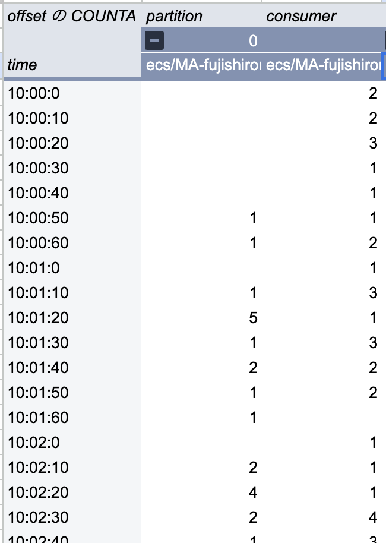
関連性があるかはわかないが、Consumerが追加されたタイミングでリバランス（partitionとconsumerの割り振り）している間にcommitをしようとしてエラーになっている。 これの影響で、offsetがおかしくなっているのでは？
2023-07-22 09:52:30.444,Caused by: org.apache.kafka.clients.consumer.CommitFailedException: Offset commit cannot be completed since the consumer is not part of an active group for auto partition assignment; it is likely that the consumer was kicked out of the group.,ecs/MA-fujishiroms-container-msk-consumer/7ea6c17e42934381bd5c59d52e0fc2e2
一度のconsumeでたくさんのメッセージをconsumeしており、ある程度溜まってからそれをcommitしているとすると、まとめて処理をしているので、commitが間に合っていないのではないかと思い調査してみると、以下のエラーも出ていた。
これは、max.poll.interval.msというconsumerがconsumeする間隔の最大値なので、これを超えてcommitしているとkafkaからは死んだと思われてしまう。
これの対策としては、max.poll.interval.msを長くするが、まとめてメッセージをconsumeする数の設定max.poll.recordsを小さくする必要がある。
2023-07-22 19:14:27.530 WARN 7 --- [-thread | CG-P5] o.a.k.c.c.internals.ConsumerCoordinator : [Consumer clientId=consumer-CG-P5-1, groupId=CG-P5] consumer poll timeout has expired. This means the time between subsequent calls to poll() was longer than the configured max.poll.interval.ms, which typically implies that the poll loop is spending too much time processing messages. You can address this either by increasing max.poll.interval.ms or by reducing the maximum size of batches returned in poll() with max.poll.records.
設定を確認したところmax.poll.recordsが500になっていた。
max.poll.records = 500
max.poll.recordsを10にしたら、 java.lang.OutOfMemoryError: Java heap spaceというエラー
Dockerファイルに以下を追加
CMD java -Xmx2g -jar msk_consumer/target/msk_consumer-0.0.1-SNAPSHOT.jar
最後に実行したやつ7/26/20:00は、多分consumerとしてdisconnectになっていないし、max.num=1になっているはず